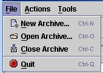

"File" Menu

The File menu deals with opening and closing archive files.
- New Archive - Creates a new,
empty archive file.
- Open Archive - Opens an existing
archive file.
- Close Archive - Close the archive you are currently working
with.
- Quit - Quit the program.